{% load static %}
<footer>
    <div id="footer-top">
        <div>
            
        </div>
        <div id="footer-ubi-cont">
            <div>
                <h3 class="footer-info footer-info-title">UBICACIÓN</h3>
                <p class="footer-info">Avenida de la juventud #504</p>
                <p class="footer-info">Colonia Barros Sierra</p>
                <p class="footer-info">C.P. 98090</p>
                <p class="footer-info">Zacatecas, Zac.</p>
            </div>
            <div>
                <h3 class="footer-info footer-info-title">TELÉFONOS</h3>
                <p class="footer-info">492 921 3228</p>
                <p class="footer-info">492 921 3018</p>
                <p class="footer-info">492 921 2816</p>
                <p class="footer-info">492 921 3308</p>
            </div>
        </div>
    </div>
    <div id="footer-bottom">
        <p id="copyright-footer">© Gobierno del Estado de Zacatecas 2021 - 2027</p>
        <div id="redes-container">
            <a title="Facebook" href="#"><i class="fa-brands fa-facebook icon-footer"></i></a>
            <a title="Twitter" href="#"><i class="fa-brands fa-twitter icon-footer"></i></a>
            <a title="YouTube" href="#"><i class="fa-brands fa-youtube icon-footer"></i></a>
            <a title="Instagram" href="#"><i class="fa-brands fa-instagram icon-footer"></i></a>
            <a title="Gmail" href="#"><i class="fa-solid fa-envelope icon-footer"></i></a>
        </div>
    </div>
</footer>